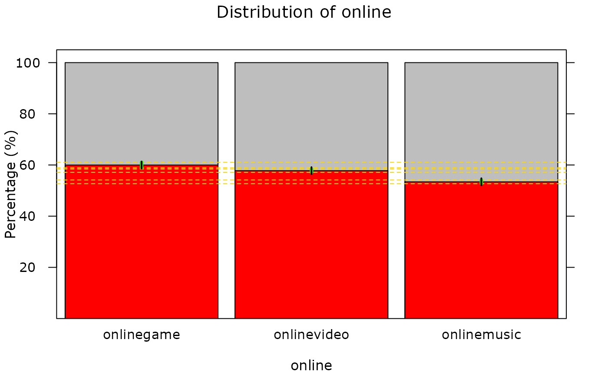
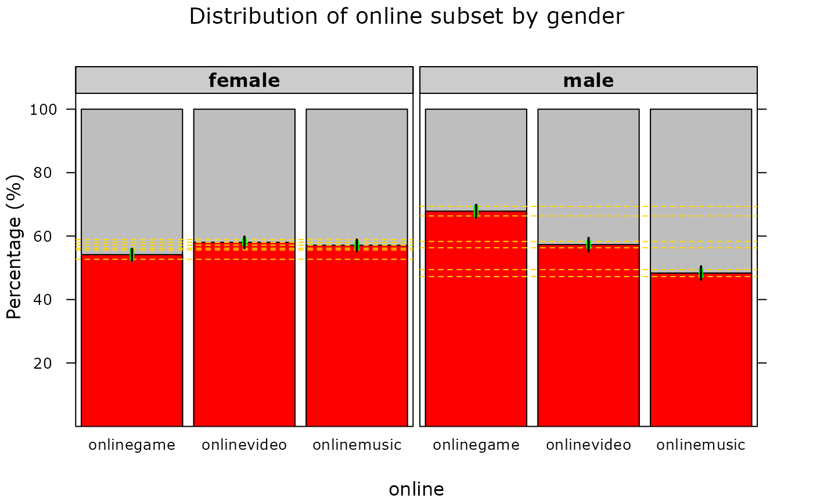

Draws a barplot of a multiple response object (MRO), showing response rates for each option along with confidence intervals and comparison intervals.
Usage
barplotMR(obj, ...)
# S3 method for class 'mrocalc'
barplotMR(obj, ...)
# S3 method for class 'bymrocalc'
barplotMR(obj, g1.level = NULL, g2.level = "_MULTI", ...)
# S3 method for class 'between'
barplotMR(obj, ...)
# S3 method for class 'b2'
barplotMR(obj, g1.level = NULL, ...)Arguments
- obj
an
mrocalcobject (frommroPara())- ...
additional parameters, currently not used
- g1.level
vector of subset variable 1 levels to show
- g2.level
vector of subset variable 2 levels to show
Methods (by class)
barplotMR(mrocalc): method for classmrocalcbarplotMR(bymrocalc): method for classbymrocalcbarplotMR(between): method for classbetweenbarplotMR(b2): method for classb2
Examples
if (requireNamespace("iNZightPlots")) {
require(iNZightPlots)
mr <- iNZightMR(online ~ onlinegame + onlinevideo + onlinemusic,
data = census.at.school.5000
)
barplotMR(mroPara(mr))
barplotMR(byMRO(mr, ~gender, mroPara))
}
#> Loading required namespace: iNZightPlots
#> Loading required package: iNZightPlots

